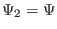

Next: Plasma flow Up: The constraint of force-balance Previous: Solovév equilibrium
The GS equation is given by Eq. (53), i.e.,
| (84) |
The second kind of scaling is to set
,
, and
. It is ready to prove that the scaled expression is
still a solution to the GS equation because
. This scaling
keep the pressure and the poloidal field unchanged and thus the poloidal beta
 remains unchanged. This scaling scales the toroidal field and thus
can be used to generate a series of equilibria with different profile of
safety factor.
remains unchanged. This scaling scales the toroidal field and thus
can be used to generate a series of equilibria with different profile of
safety factor.
Another scaling, which is trivial, is to set , , and . This scaling can be used to test the effects of the pressure (not the pressure gradient) on various physical processes.
When a numerical equilibrium is obtained, one can use these scaling methods together to generate new equilibria that satisfy particular global conditions. Note that the shape of magnetic surfaces of the scaled equilibrium remains the same as the original one.
yj 2018-03-09